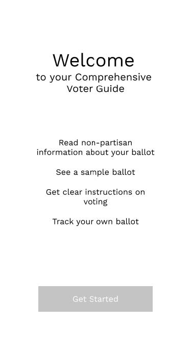

REDESIGNING THE ABSENTEE VOTING EXPERIENCE
For a design foundation class that I took in the Fall 2016 semester, I worked on a redesign of the absentee voting experience in the United States. I wrote extensively about my process on Medium, where you can find a breakdown of each phase of the project.
THE PROBLEM
The absentee voting system in the United States is incredibly difficult to
navigate, has high barriers to entry, and is plagued with issues such as lack of
accessibility, unclear directions, and little attention to visual design.
RESEARCH
I conducted some secondary and user research in order to gain a better understanding of the current state of the absentee voting system. From secondary research, I found a lot of discourse about the issues with the absentee voting system. Some highlights include:
- “As more and more states adopt absentee and vote-by-mail systems, they make voting more accessible and convenient — but they also introduce new ways of making mistakes.” (source)
- Over 4000 absentee ballots were discounted in Minnesota’s 2008 Senate election because thousands of absentee voters did not sign their envelopes to validate their ballots. (source)
Along with secondary research, I conducted 2 contextual interviews with two college-aged absentee voters, one from Pennsylvania, and another from New Mexico. Additionally, I looked into the California and New Jersey absentee ballots.

From conducting user research, I arrived at some key insights:
1. People want a general sense of trust with the process – people don’t like it when ballots are sent late, or may not arrive in time, and people want to know that absentee voting is a valid way to participate in democracy. With my interviewees specifically, the ballots being sent late gave both of them some level of nervousness or stress.
2. The amount of time voters are willing to put into absentee voting depends on the activity. People are willing to take the time to make informed decisions about voting, but they’re less patient with having to fill out personal information.
IDEATION + CONCEPT DEVELOPMENT
From research, I learned that people want to trust the absentee voting system and put in the effort necessary to legitimately participate in democracy, but the current system was plagued with issues from late ballots to postage costs, to unclear instructions. With these insights and observations in mind, I began to develop different ideas to improve the absentee voting system.
REFINEMENT
After initial ideation, I was at two main concept directions – one was to overhaul the physical ballot, rethinking its visual and experience design, and the other was to digitize the entire absentee voting process. However, after considering issues with both of the design directions, I arrived at a somewhat different direction – design a digital platform/companion that would serve as a guide for voters.
I began to make some initial sketches of the user's journey through absentee voting along with the journey through the digital voter guide. The digital voter guide would serve as a single platform with various resources that I found that absentee voter wanted, including deadline reminders, a source of nonpartisan information about ballots, clearer instructions, and potentially, ballot tracking.

I also began to create some mid-fi wireframes to better understand the layout and experience for the guide.

Lastly, as the final deliverable for the project, I created high fidelity mockups and tested a working prototype of the guide.
REFLECTIONS
After completing this project, I wanted to reflect on my work to think about what I could do better in the future, as well as lessons that I learned while doing this project. I go deeper into reflections on my project here, but here are some highlights:
First, some improvements I would make:
1. I definitely want to conduct much more user research. If I want my design decisions for different users to be driven by research, I need to do more research on many more use cases, and especially conduct more interviews with different types of voters.
2. I want to improve my questioning process when conducting contextual interviews. Once, when I was discussing my user research process, I mentioned that an interviewee said that filling out the ballot in pen made them “nervous,” and I realized that I never dug deeper to truly understand where that emotion came from. In the future, I want to improve my questioning in order dig deeper at what specific interactions or subtleties are causing interviewees to express certain emotions or reactions.
Some other lessons that I learned:
1. It’s important to not get caught up in constraints too early on in the design process. Back when I was still doing category research and selecting a design space, my thoughts were already getting caught up in concerns about time restraints, laws about ballots, feasibility, and other issues. However, while it is important to define reasonable constraints before ideating and refining, I learned that I shouldn’t constraint myself too early on in the process and potentially lose out on exploring different spaces and ideas.
2. Communicating ideas in print is incredibly different from doing so digitally — I had to print materials from this project each week for critiques in the class I’m taking. While I didn’t really discuss this issue in my writing on Medium, designing for materials to be pasted on a wall is a very different fight. I had to consider text size, colors, and images in a very different way from how I would for a digital presentation — for example, even arrangement of physical materials affected how people were able to view and understand my ideas.